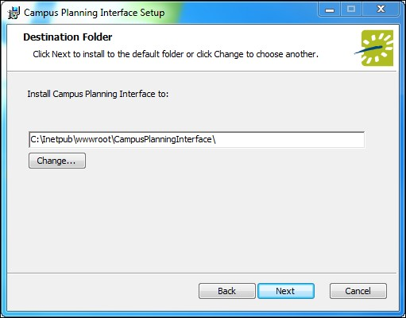
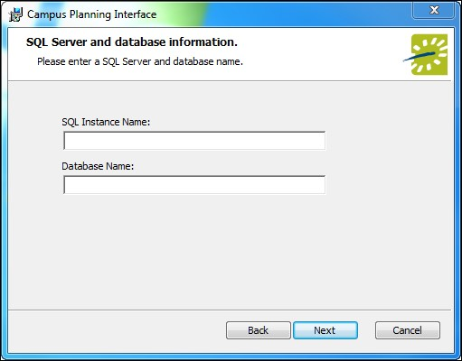
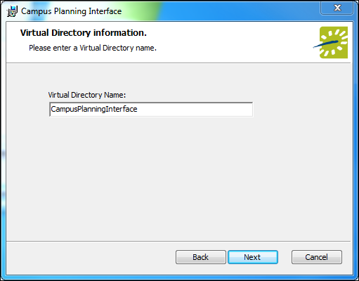

Installing or Upgrading the EMS Campus Planning Interface
Important: Before beginning the installation process, please install or upgrade your EMS databases as outlined in the EMS Installation Instructions.
- Manually uninstallany previous versions of the EMS Campus Web Client/EMS Campus Planning Interface on your web server.
- Verify that the prerequisite software has been installed.
- Download the EMSCampusPlanningInterface.msi file onto the web server that will be running EMS Campus Planning Interface.
- Run EMSCampusPlanningInterface.msi.
- The first screen welcomes you to the Campus Planning Interface Setup Wizard. Click Next to begin the installation process. The Destination Folder screen will appear.

- Select the destination folder. The installation process will create a new physical directory on your web server based on the destination folder path entered (“Campus Planning Interface” in the example above.) Click Next.
Note: EMS Campus Planning Interface should not be installed in the same physical directory as other EMS web-based products OR under a site running another version of EMS Campus Planning Interface.
- The SQL Server and database information screen will appear.

- Enter your SQL Instance (i.e. Server) Name.
- Enter your Database Name (typically named “EMS”). Click Next.
- The Virtual Directory information screen will appear.

- The Virtual Directory Name will default to the destination folder specified in Step 6. It is recommended that you keep the default setting. The installation process will create a virtual directory on your web server based on the virtual directory entered (“Campus Planning Interface” in the example above.) Click Next.
Note: EMS Campus Planning Interface should not be installed in the same virtual directory as other EMS web-based products OR under a site running another version of EMS Campus Planning Interface.
- The Ready to install Campus Planning Interface screen will appear. Click Install to install EMS Campus Planning Interface.
- The Completed the Campus Planning Interface Setup Wizard screen will appear. Click Finish.